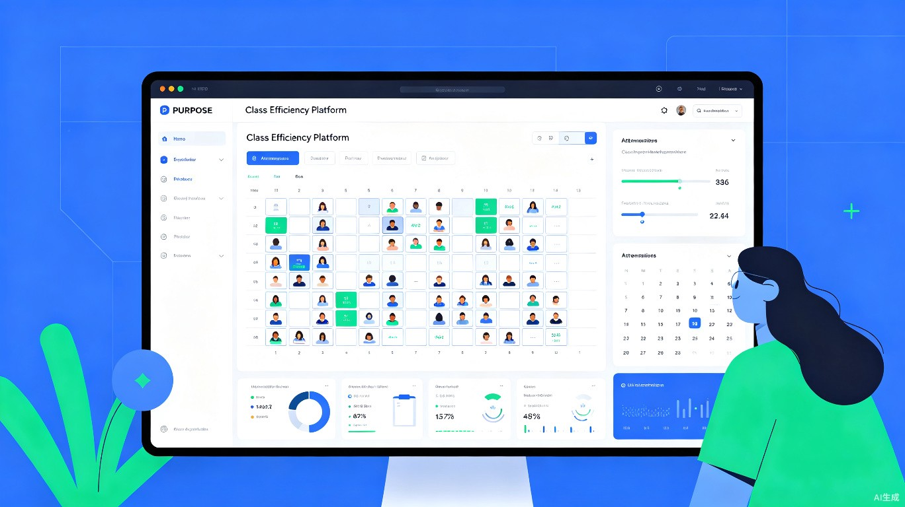
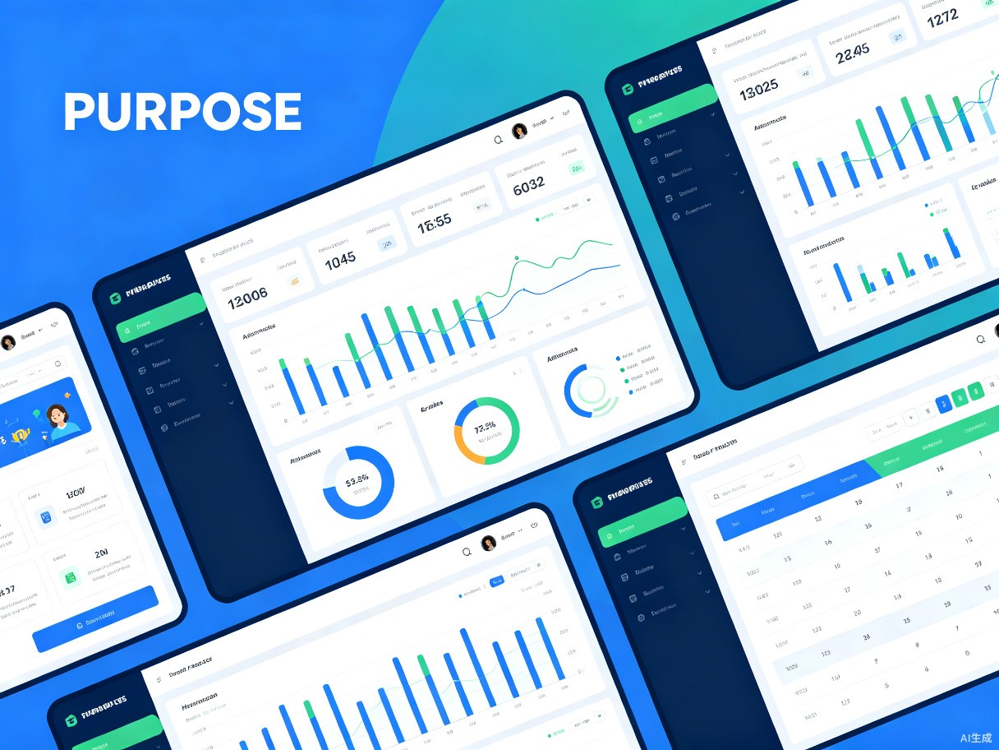

用智能座位编排与数据化管理，让每一间教室都实现高效运转

智座云班——AI驱动的班级效率管理平台
中小学班主任在班级管理中面临座位编排耗时长、学生信息分散、班级数据难以量化分析等痛点，传统手工管理方式效率低下，难以满足现代精细化教学管理的需求。
作为一名关注教育科技的产品设计者，我注意到身边的教师朋友每周都要花费大量时间在Excel表格中手动调整座位、记录学生表现。这让我意识到，班级日常管理中存在大量重复性工作可以被智能化工具替代，从而释放教师精力，让他们更专注于教学本身。
一款面向中小学教师的Web端班级管理SaaS平台，核心功能包括智能座位编排、学生档案管理、班级数据分析三大模块，支持PC端和移动端自适应访问。
核心用户群体为中小学班主任、年级组长及学校教务管理人员。据教育部统计，全国义务教育阶段专任教师约1050万人，其中班主任占比超过60%，这是一个庞大且需求明确的用户群体。
需要快速完成全班40-50名学生的座位编排，考虑身高、视力、性格互补等多重因素
根据阶段性学习表现和同桌互动效果，进行周期性座位优化
记录学生出勤、课堂表现、作业完成情况，生成阶段性成长报告
整理学生综合表现数据，制作可视化报告与家长沟通
如果没有智座云班，班主任们通常只能使用Excel表格+手绘座位图+纸质档案的组合方式，会遇到以下不方便：
通过AI智能算法，将座位编排时间从2小时缩短至5分钟，提升24倍工作效率。自动化的数据记录与分析功能，让教师从繁琐的行政事务中解放出来，将更多精力投入到教学创新和学生关怀中。
促进教育公平与个性化发展。科学的座位编排可以考虑学生视力、听力、性格互补等因素，为每位学生创造更适宜的学习环境，助力教育普惠。平台积累的数据还可为教育研究提供有价值的参考，推动教育管理科学化。

1. 智能座位编排引擎 - 支持按身高、视力、成绩互补、性格匹配等多种规则自动排座，一键生成最优方案，同时支持手动拖拽微调。
2. 学生数字档案 - 统一管理学生基本信息、家庭情况、学业表现、行为记录，支持标签分类与快速检索。
3. 班级数据看板 - 实时展示班级出勤率、作业提交率、课堂活跃度等核心指标，支持历史趋势对比。
4. 座位影响分析 - 追踪不同座位区域学生的表现变化，为后续调整提供数据依据。
5. 多端协同 - 支持PC端深度管理与移动端快捷查看，随时随地掌握班级动态。
前端采用 React + TypeScript 构建响应式界面，配合 ECharts 实现数据可视化；后端使用 Node.js + PostgreSQL 提供RESTful API服务；座位编排算法基于遗传算法与约束满足问题（CSP）求解，确保在复杂规则下快速生成最优解。
平台采用微服务架构设计，核心服务包括：用户认证服务、班级管理服务、座位编排引擎、数据分析服务、文件存储服务，各服务独立部署、弹性伸缩。
短期（3个月）：完成核心功能开发，在3-5所学校进行试点测试，收集反馈优化产品。
中期（6-12个月）：拓展家校互通功能，增加家长端查看学生座位与表现；接入学校教务系统，实现数据互通。
长期（1-2年）：构建区域教育管理大数据平台，为教育主管部门提供班级管理质量评估与决策支持。